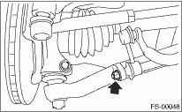
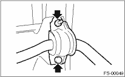

1. Lift the vehicle.
2. Remove the under cover.
3. Remove the jack-up plate from lower part of the crossmember.
4. Remove the sub frame. 
5. Remove the nuts which secure the stabilizer link to front transverse link.

6. Remove the bolt and nut which secures the stabilizer to the crossmember.
